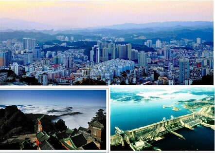

十堰市位于湖北，是鄂、豫、陕、渝毗邻地区唯一的区域性中心城市，位于华中、西南、西北三大经济板块的结合部，是毗邻地区最大的汽车制造，汽车科研，医疗卫生，商业集散，交通枢纽，旅游文化，生态控制中心，是鄂西生态文化旅游圈的核心城市。十堰是世界著名道教圣地武当山，南水北调中线工程调水源头丹江口水库，中国第一世界前三的东风商用车公司总部所在地，“武当山”、“丹江水”、“汽车城”三张世界级名片闪耀全球。
十堰市位于中国版图雄鸡心脏部位秦巴山区汉水谷地，湖北西北部，汉江中上游，四季分明，气候宜人，与鄂、豫、陕、渝四省市交界，独特的地理位置，使十堰拥有“南船北马、川陕咽喉、四省通衢”之称。辖三区四县一市及两个市政府派出机构区（即：茅箭区、张湾区、郧阳区、郧西县、竹溪县、竹山县、房县、丹江口市和十堰经济技术开发区、武当山旅游经济特区，总面积2.4万平方公里，人口350万。
